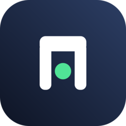

Wristgate privacy policy
Last updated: 26 November 2026 · applies to the Wristgate Android app
Wristgate collects no data. It has no internet access, so nothing it sees can leave your phone. There are no accounts, ads, analytics or trackers.
What Wristgate reads
To do its job, Wristgate needs notification access, which you grant in Android's settings. With it, Wristgate reads the notifications of the messaging apps you select (for example WhatsApp, Signal or Telegram), in order to:
- recognize incoming calls;
- check whether a message matches your rules (keywords, or contacts and groups you chose).
When it does, Wristgate posts its own notification on your phone, which your watch's companion app (Garmin Connect, Zepp, Galaxy Wearable…) forwards to your watch. What that app then does is governed by its own privacy policy.
All of this happens on your phone. Notifications from apps you didn't select are ignored.
What Wristgate stores, on your phone only
- Your settings and rules: the apps you selected, your keywords, and the contacts and groups you added.
- A short history of what was forwarded, shown in the app: who called or wrote, which app, when, and why it was forwarded (last 100 items). The text of messages is never stored.
- Recent senders: the names of up to 15 people or groups who wrote to you recently, so you can add them to your rules with one tap.
This data is kept in the app's private storage. It is not included in Android backups and is not shared with anyone, including us. You can clear the history from the app at any time; uninstalling Wristgate deletes everything.
Permissions
- Notification access: to see incoming calls and messages, as described above.
- Show notifications: to post the notifications your watch receives.
- Unrestricted battery (a setting you choose, not a permission): so Android doesn't stop Wristgate in the background.
Wristgate has no internet permission and no contacts permission. Pick from contacts uses Android's own contact picker, which shares with Wristgate only the contact you choose, and only its name is kept.
Children
Wristgate is not directed at children and collects no personal information from anyone.
Changes and contact
If this policy changes, the new version will be published on this page with a new date. Wristgate is open source: you can check what it does in its source code.
Questions? Open an issue on GitHub.